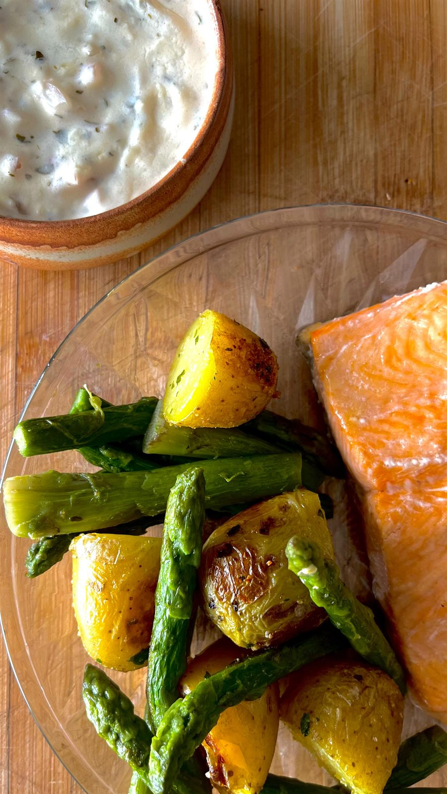

Des pavés de truite nacrés cuits au four, des pommes de terre dorées à la poêle, des asperges vapeur et une sauce crémeuse aux échalotes et aux herbes.
Temps total : 1 h 05
Faire cuire les pommes de terre et les asperges à la vapeur jusqu’à ce qu’elles soient tendres.
Réserver.
Cuisson de la truite
Préchauffer le four à 180°C.
Déposer les pavés de truite dans un plat, saler, poivrer, ajouter un filet d’huile d’olive.
Enfourner pendant 15 à 20 minutes selon l’épaisseur (la chair doit être juste nacrée, pas sèche).
Couper les pommes de terre en morceaux si besoin.
Les faire revenir à la poêle avec un peu d’huile ou de beurre.
Ajouter de l’ail séché et du persil.
Faire dorer jusqu’à ce qu’elles soient bien croustillantes.
Faire fondre le beurre dans une petite casserole.
Ajouter les échalotes finement ciselées et l’ail.
Laisser revenir doucement.
Verser la crème, saler, poivrer.
Ajouter ciboulette et/ou persil en fin de cuisson., Dressage
Disposer le pavé de truite avec les asperges et les pommes de terre dorées.
Napper légèrement de sauce ou servir à part.
Retrouvez toutes mes recettes, et suivez les nouveautés chaque semaine sur Instagram.